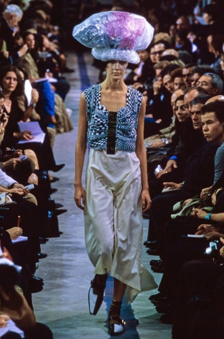
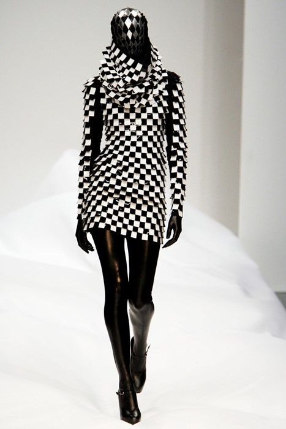
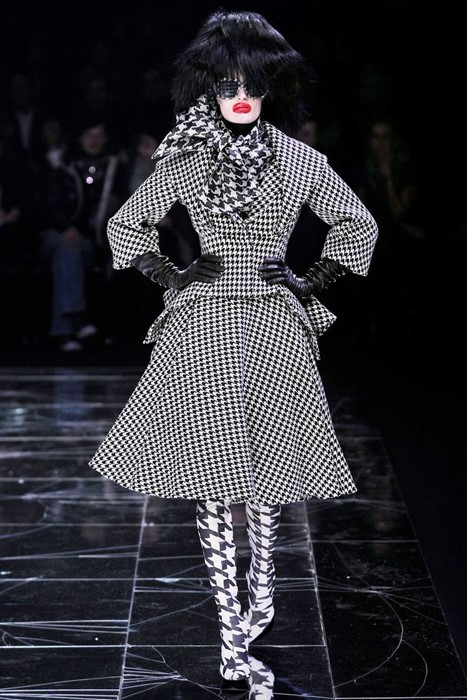
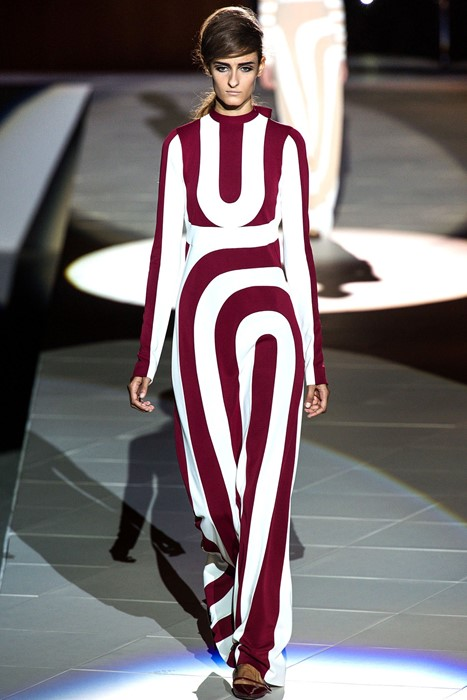
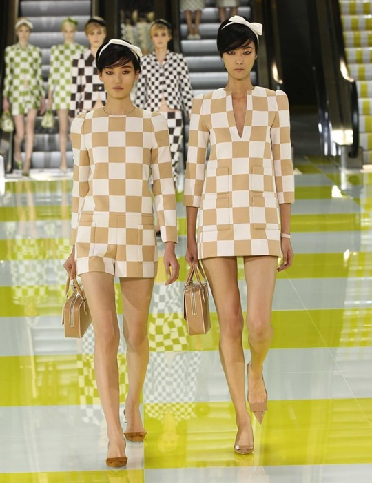
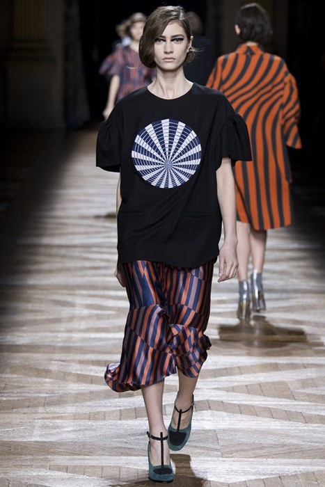
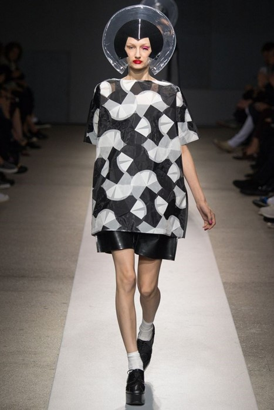
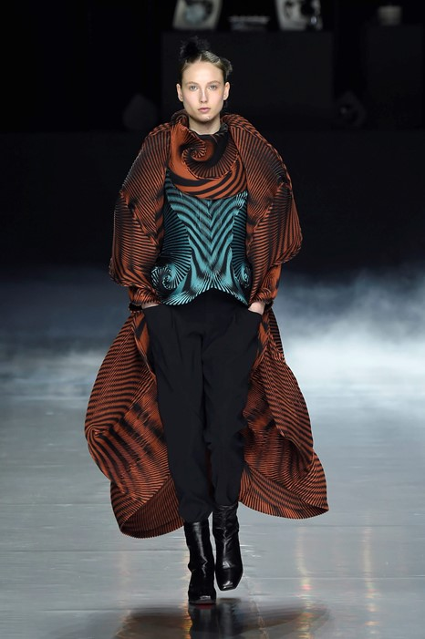
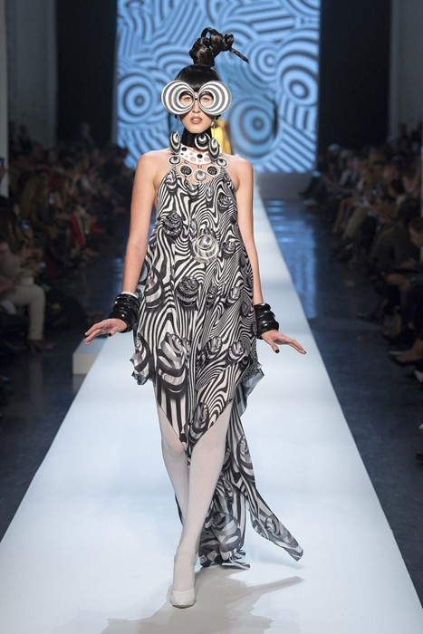

Ten Times Op-Art Crossed Over Into 21st-Century Fashion
In April 1965 at MoMA in New York, an exhibition titled The Responsive Eye opened to the public. It was to celebrate a recently established movement in modern art named Op-Art, showing works from artists Frank Stella, Josef Albers and Bridget Riley, to name a few. “Using only lines, bands and patterns, flat areas of colour, white, grey or black, or cleanly cut wood, glass, metal and plastic, these artists establish a totally new relationship between the observer and a work of art,” the press release said, in its typewritten font.
The utilisation of graphic shapes and block colours to trick the eye into seeing hidden dimensions in a still, flat image, naturally fascinated the fashion designers of the era. For what could possibly be more intriguing than observing such a print in motion on the body? Ossie Clark, Pierre Cardin, Yves Saint Laurent, Mary Quant and André Courrèges are now synonymous with clothes which reference Op-Art, which genre subsequently remains one of the most referenced to this day, and saw a resurgence throughout the 1990s and 2000s in particular. This month, a new show of Riley’s work opens at London’s David Zwirner Gallery – a fitting opportunity to explore ten moments her influence can be felt on the runways of today.
1. Comme des Garçons, S/S01

Rei Kawukubo’s collection for Comme des Garçons S/S01 was fittingly called Optical Shock, encompassing Op-Art prints on the inimitable designer’s signature bubbling and ruched silhouettes, PVC trousers and tops and also on socks and shoes. Coupled with camouflage and galactic headpieces constructed from used materials such as bubble wrap, plastic and crime scene tape, this was a show that welcomed in the new millennium whilst keeping one foot tentatively in the 20th century.
2. Gareth Pugh, S/S07

Designer Gareth Pugh was instrumental in the resurgence of club-kid culture in the mid-Noughties, not least through the art and fashion collective !Wowow!, of which he was a member. His debut show for A/W06 included an inflatable look – a gothic Jeff Koons bunny affair, that would have looked fitting on the late Leigh Bowery. For his second collection, Pugh seemed to reference Bowery once again, with genderless, faceless figures that stomped down the runway atop elevated platforms, wearing monochromatic chequerboard prints.
3. Alexander McQueen, A/W09

“The Horn of Plenty has proven itself over the past years to be a collection without a sell-by-date: one which epitomises McQueen’s inimitable ability to turn trash into treasure,” wrote Olivia Singer in 2015. Indeed, McQueen’s final Autumn/Winter collection, before his death almost one year later, was set against a backdrop of old show props, piled high in the centre of the runway, alluding to fashion’s oft throwaway culture. Even the models’ hair, coiffed by Guido Palau, was an homage to recycling; their rollers took the form of Coke cans swathed in clingfilm and secured with sellotape. Houndstooth was omnipresent throughout the collection, combined with chevron stripes and harlequin prints (an Op-Art staple).
4. Marc Jacobs, S/S13

For S/S13, Marc Jacobs looked to 1960s New York and the golden age of Warhol’s factory. Naturally, Op-Art was a pervasive theme in the clothes, the women wearing Möbius strip patterned jumpsuits, cut out at the neck following the lines of the graphic print, and scallop-edged dresses highlighting the tail end of wide black and white stripes at the hemline. Although evocative of a bygone era, Jacobs’ collection appeared neither pastiche nor retro – no mean feat considering the heavy referencing.
5. Louis Vuitton, S/S13

Op-Art was very much at the forefront of Marc Jacobs’ mind for S/S13; the designer referenced the work of French artist Daniel Buren in his collection for Louis Vuitton. Buren was also responsible for creating the show space, which included four striped escalators carrying models down in pairs to a lemon-yellow and white lacquered runway. The clothes themselves were boxy and precise, mod-ish silhouettes printed with blown-up, surrealist Damier check.
6. Dries Van Noten, A/W14

“It’s a lot of things: unexpected elegance, bright colours, two-dimensional flowers, chic shoes – and Bridget Riley,” said Dries Van Noten of his A/W14 collection. “It’s sharp lines of graphic motifs, it’s acids, it’s raves.” The opening look set the tone for the rest of the show: a dove grey wool coat, striped with a Riley-esque swirl the colour of artificial grape juice. This made way for psychedelic sweaters, printed chiffon and silk worn with T-bar shoes and fur stoles. It was part 1930s, part 1960s and entirely Dries.
7. Junya Watanabe, S/S15

Junya Watanabe subverted Op-Art’s illusory nature, rendering graphic patterns in a sculptural third-dimension for S/S15. Tessellating shapes and circular PVC forms built into mini-dresses referenced the work of Bridget Riley and Yayoi Kusama, with fishbowl headpieces created by Tomi Kono alluding to fashion’s penchant for space travel during the 1960s.
Celia Birtwell, wife of Ossie Clark and fashion designer in her own right, was one of the inspirations behind Pierpaolo Piccioli and Maria Grazia Chiuri’s A/W15 Valentino collection. Birtwell was Clark’s and David Hockney’s muse, and riffing on this theme the Italian design duo also looked to Emilie Flöge – life companion of painter Gustav Klimt. Early 19th century photographs of Flöge depict her wearing monochrome, graphic dresses of her own making. These were almost replicated for the Valentino runway, bringing fashion and art history full circle.
9. Issey Miyake, A/W16

For A/W16, Yoshiyuki Miyamae celebrated the signature Miyake pleat through elaborate moulded garments in Baked Stretch, a new iteration of the designer’s trademark technique. The production process involves clothes being marked with wavy lines of glue, rainbow-toned dyes added to the gaps in between, before they are put into an oven and quite literally cooked. The result was buoyant dresses, trousers, coats and skirts that bounced as the models sauntered down the runway as human trompe l’oeils.
10. Jean Paul Gaultier Haute Couture, S/S18

We all hold dear to us somebody who was formative in launching our careers. For Jean Paul Gaultier, that someone is his former employer Pierre Cardin, to whom he paid homage with his Haute Couture collection for S/S18 – M. Cardin was even in attendance at the show, watching Gaultier’s latest creations from the front row. There were Op-Art prints in plentiful supply, with sculptural hair and graphic make-up reminiscent of William Klein’s 1966 film Who Are You, Polly Maggoo?, particularly evident in the above look worn by Anna Cleveland. Proof, if it were needed, that fashion’s relationship with Op-Art is still going strong to this day.